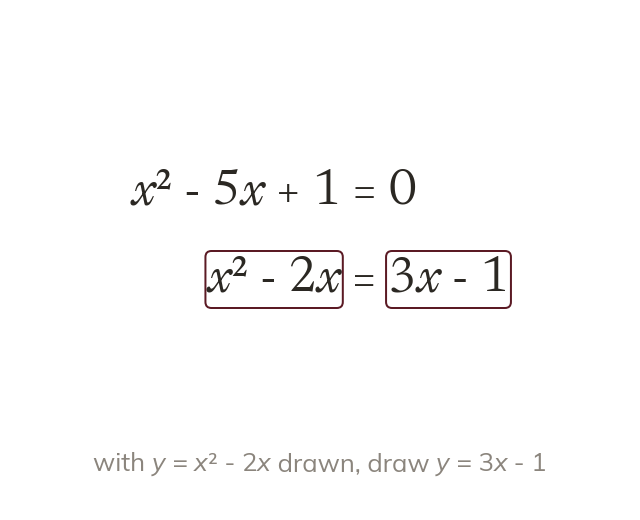
The curve's expression stands alone
The drawn curve's expression must be one whole side. What is left on the other side is the line to draw.
A curve is drawn once, but many equations can be solved from it. Rearranging each equation shows which straight line to add.
Work down the page at your own pace. Write every answer in your book first, then click to check it.
Read each card, then follow the worked examples one step at a time.

The drawn curve's expression must be one whole side. What is left on the other side is the line to draw.
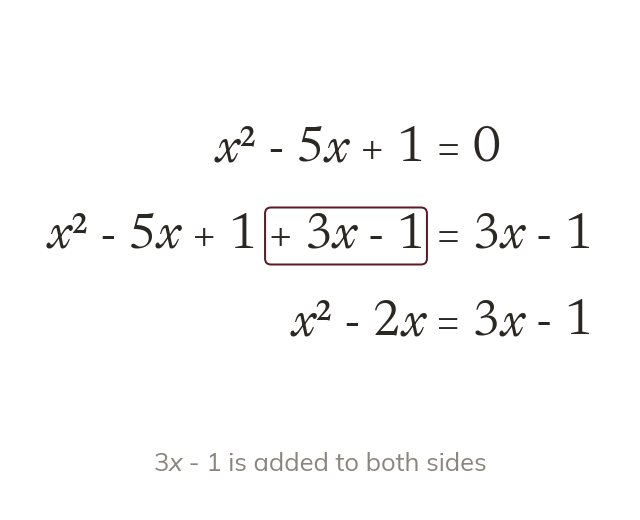
Balancing keeps the equation true. Here both sides of gain
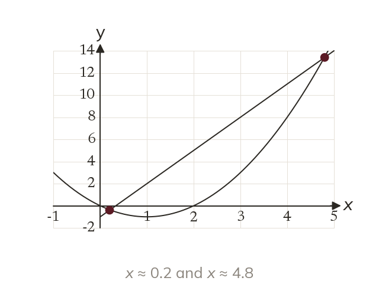
The x-coordinates where the line meets the curve solve the equation. The number of crossings is the number of solutions.
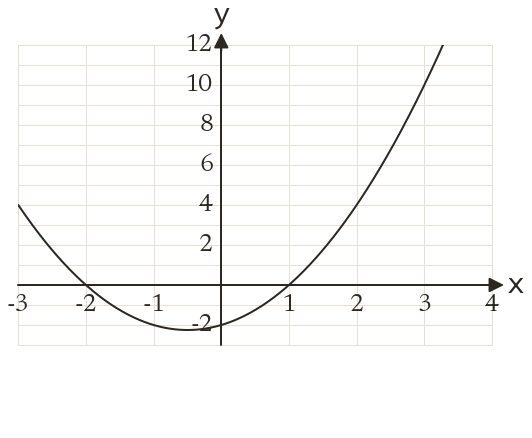
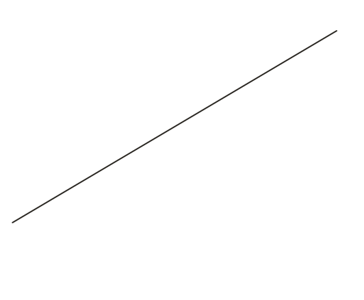
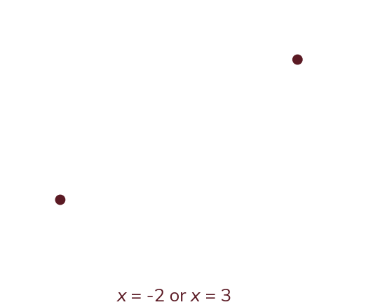
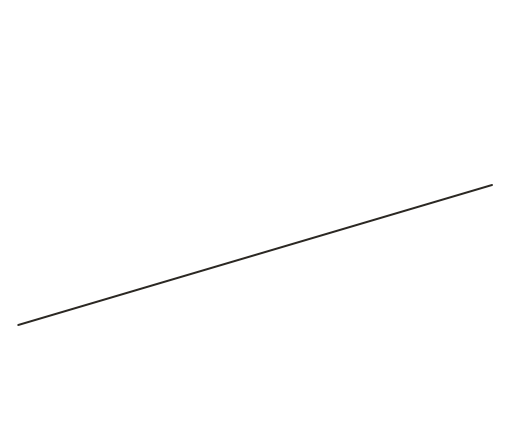
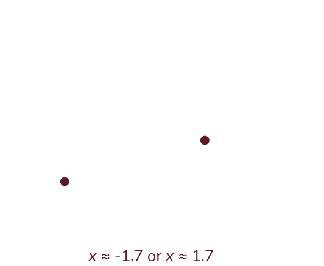
Pick an answer. If it's wrong, the feedback tells you which mistake it was.
Printable worksheet — the questions with room to work.
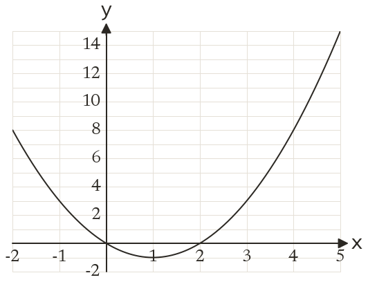
Read each card, then follow the worked examples one step at a time.
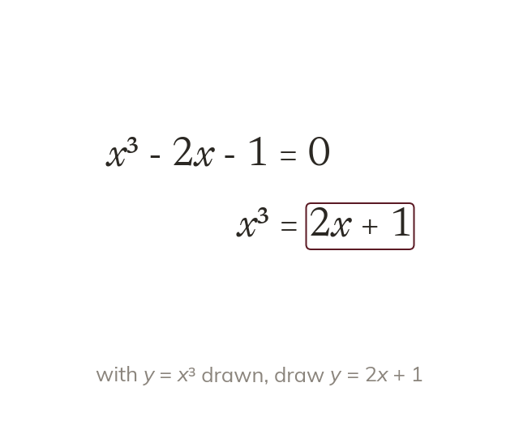
With drawn, must stand alone on one side. So becomes
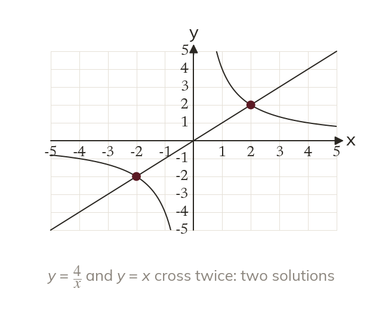
Each crossing is one solution. A line that misses the curve means no real solutions.
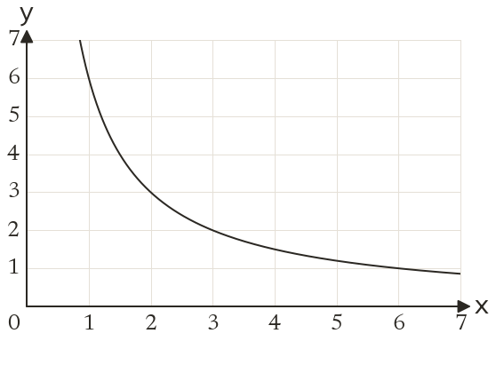
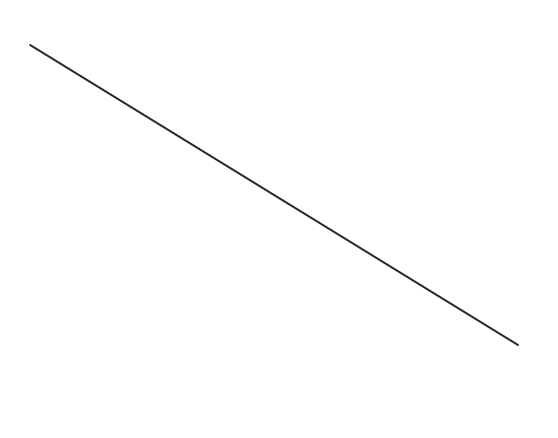
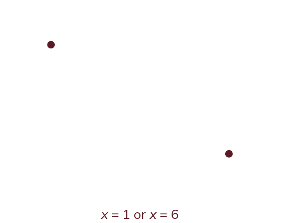
Pick an answer. If it's wrong, the feedback tells you which mistake it was.
Finished? Next lesson: 10H.15.10 Drawing and Measuring Tangents.
Log in, then search for a code to practise that skill.
Videos, worksheets and more on each part of this lesson.